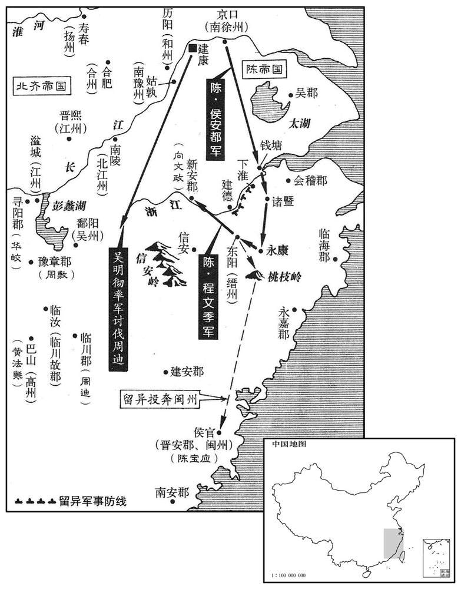

公元561年资治通鉴：本年记事、原文与白话对照
按原书编年位置阅读；追叙和史论不等于本年发生的事件。白话采用所据译本，缺译不以生成译文补齐。
卷168 · 本年记事
公元561年 · 陈世祖文皇帝天嘉二年
二年〔（辛巳、五六一）〕
上传原文的注释括号有异常，字符原样保留；无法可靠划分的段落默认全文显示。
本年事件索引（现代整理）
- 北周改元保定，军政大事由宇文护先行决断
- 陈朝大赦
- 周主祭祀圜丘
- 北齐主祭圜丘并举行禘祭
- 周主祭方丘、南郊和太社
- 北齐派王琳驻合肥招募军士，任其为扬州刺史镇寿阳
- 周主祭太庙并颁行六官制度
- 北周湘州城主殷亮投降，湘州平定
- 侯瑱送贺若敦渡江，贺若敦率军北返并被除名
- 周主在东郊祭日
- 北周置勋州于玉壁，任韦孝宽为刺史
- 韦孝宽派间谍探听北齐军情并惩治叛将
- 韦孝宽修筑边城防御南下胡人
- 北齐太尉侯瑱去世
- 北周将八丁兵改为十二丁兵，规定每年服役一月
- 发生日食
- 北周任尉迟纲为大司空
- 北周封宇文康为纪国公、宇文赟为鲁公
- 北周派殷不害出使陈朝
- 北周改铸布泉钱，一枚抵五枚五铢钱
- 北周追封宇文颢、宇文连、宇文洛生等为公
- 高湛怨恨杨愔等杀害二叔，开始图谋自保
- 平秦王高归彦劝高演召济南王高殷到晋阳
- 高湛向高元海询问自保之策，犹豫是否举兵
- 高湛奉诏派数百骑送高殷前往晋阳
- 发生日食
- 北齐任高浟为太保、尉粲为太尉
- 娄太后追问济南王下落，高演避而不答
- 高演命赵叡召高湛继位，随后病逝
- 颜之推评论高演孝顺但不知忌讳
- 高湛确认高演遗体后入晋阳，即皇帝位并改元太宁
- 北周派杜杲出使陈朝，承诺送还安成王陈顼
- 北齐任高浟为太师、高归彦为太傅等
- 北周君主在岐阳打猎后返回长安
- 陈朝开征海盐税和酒类专卖税
- 陈文帝派侯安都讨伐留异，留异与王琳暗中往来

本年形势与背景参考图
春，正月，戊申，周改元保定。以大耱宰护为都督中外诸军事；令五府总于天官，事无巨细，皆先断后闻。〔五府，地官、春官、夏官、秋官、各官府也。史言宇文护之权愈重。断，丁乱翻。〕
春季，正月，戊申（初一），北周改换年号为保定。任命大冢宰宇文护为都督中外诸军事；命令地官、春官、夏官、秋官、冬官等五府全部隶属于天官府，事情无论大小，都可以由宇文护先拍板决定再奏闻皇帝。
庚戌，大赦。
庚戌（初三），陈朝大赦天下。
周主祀圜丘。
北周国主在圜丘祭天。
辛亥，齐主祀圜丘；壬子，禘于太庙。
辛亥（初四），北齐孝昭帝在圜丘祭天。壬子（初五），在太庙举行祭。
周主祀方丘；甲寅，祀感生帝于南郊；〔用郑玄之说，祀感生帝灵威仰于南郊以祈谷。〕乙卯，祭太社。
北周孝昭帝在方丘祭地；甲寅（初七），在南郊祭祀感生帝，以祈祷粮食丰收。乙卯（初八），祭太社。
齐主使王琳山合肥，召募伧楚，更图进取。〔伧，助庚翻。〕合州刺史裴景徽，〔考异曰：北齐书作「景晖」。今从陈书。〕琳兄之伲也，请以私属为乡导。〔乡，读曰向。齐主使琳与行台左丞卢潜将兵赴之，琳沈吟不决。景徽恐事泄，挺身奔齐。〔按梁置合州于合肥，侯景之乱，已入于齐，齐之境土，南尽历阳。陈盖侨置合州于江滨，以景徽为刺史。沈，持林翻。〕齐主以琳为骠骑大将军、开府仪同三司、扬州刺史，镇寿阳。
两版字句有差异，建议核对原文。
北齐孝昭帝派王琳从合肥出发，召募北方武人，想求得进一步发展。陈朝合州刺史裴景徽，是王琳的哥哥王珉的女婿，他请求让他家里的奴仆为王琳充当向导。孝昭帝让王琳和行台左丞卢潜带兵一起去策应裴景徽，王琳为了慎重起见，便借口考虑考虑，一直没有作出决定。裴景徽担心自己求作内应的事泄漏出去，就挺身而出逃奔了北齐。孝昭帝任命王琳为骠骑大将军、开府仪同三司、扬州刺史，让他镇守寿阳。
己巳，周主享太庙，班太祖所述六官之法。〔宇文泰庙号太祖。泰之相魏也：建六官，述周礼六典以为六官之法。〕
已巳（二十二日），北周国主在太庙祭拜祖宗，按太祖所定的六官之法进行排列。
辛未，周湘州城主殷亮降，〔降，户江翻；下同。〕湘州平。
辛未（二十四日），北周湘州城主殷亮投降陈国，湘州被平定。
侯瑱与贺若敦相持日久，瑱不能制，乃借船送敦等渡江；〔按贺若敦传，「借船」之上有「求」字。〕敦虑其诈，不许，报云：「湘州我地，为尔侵逼；必须我归，可去我百里之外。」瑱留船江岸，引兵去之。敦乃自拔北归，军士病死者什五六。武陵、天门、南平、义阳、河东、宜都郡悉平。〔五代志：澧阳郡孱陵县，旧置南平郡。安乡，旧置义阳郡。南郡松滋县，旧置河东郡。宋白曰：澧阳郡安乡县，本汉孱陵县地，后汉为汉寿县地，晋会立义阳郡。〕晋公护以敦失地无功，除名为民。
侯与贺若敦两军相持时日越来越长，侯不能取胜，于是就借了一些船只，说是要送贺若敦他们渡过长江回去。贺若敦担心其中有诈，没有同意，派人回答侯说：“湘州原是我们的地域，现在遭到你们的侵略威逼；如果要我退兵回去，你们先离开我军一百里之外。”侯把借来的船留在江岸，自己带兵退走了。贺若敦这才自己拔营北归，军士中病死的有十分之五六。武陵、天门、南平、义阳、河东、宜都郡都平定了。晋公宇文护因为贺若敦既失去土地，又没有战功，便把他撤职黜为平民。
二月，甲午，周主朝日于东郊。〔三代之礼，春朝朝日，秋暮夕月。周人慕古，举行其礼。朝，直遥翻。〕
二月，甲午（十八日），北周国主在东郊朝拜日神。
周人以子司徒韦孝宽尝立动于玉壁，〔事见一百五十九卷梁武帝中大同元年。后周之制，小司徒，六命，上大夫也。〕乃置勋州于玉壁，以孝宽为刺史。
北周因为小司徒韦孝宽曾在玉壁建立过功勋，于是就在玉壁设置勋州，任命韦孝宽为刺史。
孝宽有恩信，善用间谍，〔间，古苋翻。〕或齐人受孝宽金货，遥通书疏，故齐之动静，周人皆先佑之、有主帅许盆，以所戍城降齐，孝宽遣谍取之，俄斩首而还。〔帅，所类翻。谍，徒协翻。〕
韦孝宽为人讲信用，善施恩，也善于利用间谍。有的北齐人接受了韦孝宽的金钱财物，远远地寄来情报书信，所以北齐方面的动静，北周人都事先知道得一清二楚。有一个主帅叫许盆，献出他戍守的城池去投降北齐，韦孝宽派间谍去杀他，不久果然把他斩首，顺利归来。
离石以南，生胡数为抄掠，〔五代志：离石郡，后齐置西汾州。生胡，即稽胡之不附属周者。数，所角翻。抄，楚交翻。〕而居于齐境，不可诛讨。孝宽欲筑城于险要以制之，乃发河西役徒十万，毋士百人，〔河西，龙门河之西也。〕遣开府仪同三司姚岳监筑之。岳以兵少，惧不敢前。〔监，工衔翻。少，诗沼翻。〕孝宽曰：「计此城十日可毕。城距晋州四百余里，吾一日创手，二日敌境始知。设使晋州征兵，三日方集，谋议之间，自稽二日，计其军行，二日不到，我之城隍，足得办矣。」乃令筑之。齐人果至境上，疑有大军，停留不进。其夜，孝宽使汾水以南傍介山、稷山诸村纵火，〔傍，蒲浪翻。唐志：蒲州万泉县有介山，介子推隐处。稷山县有稷山。〕齐人以为军营，收兵自固。岳卒城而还。〔卒，子恤翻。〕
离石郡以南，不肯归附的胡人多次来骚扰虏掠，抢了就跑，而他们住在北齐境内，所以不能越境去征讨。韦孝宽想在险要处修筑城垣来制伏他们，于是征发河西一带民工十万人，兵士一百人，派开府仪同三司姚岳去监督修筑。姚岳因为兵少，心里害怕不敢去。韦孝宽说：“我估计这座城十天就可以修筑完毕。城址离晋州四百多里地，我们第一天开始动工，第二天敌人境内才会得到消息。假设晋州方面调集军队，三天才能调齐，谋划商议对策，自然得费去两天，计算一下敌军的行军速度，两天是赶不到我们修城的地方的，等他们到来时，我们的城垣壕沟早修成了。”于是就下令开始修筑。北齐军队果然来到边境上探望，因怀疑有大军埋伏在民工后头，就停下来不再前进。当天晚上，韦孝宽让汾水以南靠着介山、稷山的那些村庄故意纵火，北齐人望见火光，以为那就是军营，赶快收兵，回去自守去了。姚岳最终把城修好，顺利返回了。
三月，乙卯，太尉零陵壮肃公侯瑱卒。
三月，乙卯（初九），太尉零陵人壮肃公侯去世。
丙寅，周改八丁兵为十二丁兵，卒岁一月而役。〔八丁兵者，凡境内民丁分为八番，递上就役。十二丁兵者，分为十二番，月上就役，周而复始。〕
丙寅（二十日），北周把境内原来分为八拨而轮番服役的民丁改分为十二拨，每拨每年服役一个月。
夏，四月，丙子朔，日有食之。
夏季，四月，丙子朔（初一），发生日食。
周以少傅尉迟纲为大司空。〔尉，纡勿翻。〕
北周任命少傅尉迟纲为大司空。
丙午，周封愍帝子康为纪国公，皇子赟为鲁公。〔【章：十二行本「鲁」下有「国」字；乙十一行本同。】〕赟，李后之子也。〔赟，于伦翻。〕
丙午（疑误），北周封周愍帝的儿子宇文康为纪国公，皇子宇文为鲁国公。宇文是李后的儿子。
六月，乙酉，周使御正殷不害来聘。〔周书中徽传曰：御正，任专丝纶，盖中书舍人之职也。北史卢辩传：武成元年，增置御正四人，位上大夫。考之唐六典，则曰：后周依周官，春官府置内史中大夫，掌王言，盖比中书监、令之任，后又增为卜一大夫。小中下大夫，比中书侍郎之任；小史上士，比中书舍之任。然则为御正者，亦代之职，在帝左右，又亲密于中书。杜佑通典：御正属天官府。〕
六月，乙酉（十一日），北周派御正殷不害来陈朝聘问。
秋，七月，周更铸钱，〔更，工衡翻。〕文曰「布泉」，一当五，与五铢并行。
秋季，七月，北周重新铸钱，钱币上的字是“布泉”，一枚当五枚小钱，与五铢钱一起流通。
己酉，周追封皇伯父颢为邵国公，以晋公护之子会为嗣；颢弟连为杞国公，以章武公导之子亮为嗣；连弟洛生为莒国公，以护之子至为嗣；〔追封太祖之子武邑公震为宋公，以世宗之实为嗣。〔颢与卫可孤战殁，有子什肥、导、护。什肥与其叔连皆为高欢所杀，无后，故以会、亮嗣之。洛生为尔朱荣所杀，震早卒，皆无后，故亦立嗣。〕
两版字句有差异，建议核对原文。
己酉（初五），北周追封皇伯父宇文颢为邵国公，让晋公宇文护的儿子宇文会为其后嗣。封宇文颢的弟弟宇文连为杞国公，让章武公宇文导的儿子宇文亮为其后嗣；宇文连的弟弟宇文洛生为营国公，让宇文护的儿子宇文至为其后嗣；追封太祖文帝的儿子武邑公宇文震为宋公，让世宗明帝的儿子宇文实为其后嗣。
齐主之诛杨、燕也，〔燕，因肩翻。〕许以长广王湛为太弟；既而立太子百年，湛心不平。帝在晋阳，湛居守于邺。〔杨、燕，谓杨愔、燕子献。守，手又翻。〕散骑常侍高元海，高祖之从孙也，〔谓欢庙号高祖。元海父思宗，欢之从子。散，悉亶翻。骑，奇寄翻。〕留典机密。帝以军代人库狄伏连为幽州刺史，斛律光之弟羌为领军，以分湛权。湛留伏连，不听羡视事。〔齐主以伏连代羡为幽州，以羡代伏连为领军，以分邺下之权。湛知其故，乃留伏连不使之幽州，而羡至，又不听其视领军府事。〕
北齐孝昭帝杀杨、燕子献等人时，答应让长广王高湛当太弟，将来接他的皇位。后来却立高百年为太子，高湛心中愤愤不平。孝昭帝在晋阳，高湛留守在邺城。散骑常侍高元海，是神武帝的堂孙，留下来掌管机密。孝昭帝任命领军代郡人库狄伏连为幽州刺史，斛律光的弟弟斛律羡为领军，以此来分散高湛的兵权。高湛留下库狄伏连，不让他到幽州去上任，又不让斛律羡去执行领军的职务。
先是，济南闵悼王常在邺，〔济南王殷谥闵悼。先，悉荐翻。济，子礼翻。〕望气者言：邺中有天子气。平秦王归彦恐济南复立，为己不利，〔齐主藉归彦握兵以杀杨、燕，杨、燕死而济南废矣，故恐其复立，为己不利。复，扶又翻。〕劝帝除之。帝乃使归彦至邺，征济南王如晋阳。
原先，济南闵悼王高殷常住在邺城，一个会望气之术的人说：邺中有天子崐之气笼罩。平秦王高归彦怕济南王将来又当孝昭帝，对自己很不利，就劝孝昭帝除去济南王。孝昭帝便派高归彦去邺城，征召济南王到晋阳来。
湛内不自安，问计于高元海。元海曰：「皇太后万福，至尊孝友异常，殿下不须异虑。」湛曰：「此岂推诚之意邪！」元海乞还省，一夜思之，湛即留元海于后台。元海达旦不眠，唯遶床徐步。夜漏未尽，湛遽出，曰：「神算如何﹖」元海曰：「有三策，恐不堪用耳。请殿下如梁孝王故事，从数骑入晋阳，先见太后求哀，〔梁孝王，事见十六卷汉景帝中二年。〕后见主上，请去兵权，〔见，贤遍翻。去，羌吕翻。〕以死为限，不干朝政，〔朝，直遥翻。〕必保太山之安。此上策也。不然，当具表云，威权太盛，恐取谤众口，请青、齐二州刺史，沈靖自居，〔沈，持林翻。〕必不招物议。此中策也。」更问不策。曰：「发言即恐族诛。」固逼之。元海曰：「济南世嫡，立上假太后令而夺之。今集文武，示以征济南之敕，执斛律丰乐，〔斛律羡，字丰乐。乐，音洛。〕斩高归彦，尊立济南，号令天下，以顺讨逆，此万世一时也。」湛大悦。然性怯，狐疑未能用，使术士郑道諆等卜之，皆曰：「不利举事，静则吉。」有林虑令潘子密，晓占候，〔林虑县，汉属河内郡，晋属汲郡，魏敬宗永安元年置林虑郡，带林虑县。虑，读如闾。〕潜谓湛曰：「宫车当晏驾，殿下为天下主。」湛拘之于内以候之。又令巫觋卜之，〔觋，刑狄翻。〕多云「不须举兵，自有大庆。」
高湛因为违抗孝昭帝的任命，心里很不踏实，就向高元海询问计策。高元海说：“皇太后健康长寿，福泽绵长，皇上异常地孝顺友爱，殿下不必有什么异样的考虑。”高湛听了不高兴，说：“这难道就是我信任你，对你推诚相待的本意吗？”高元海要求回到台省中，用一晚上仔细考虑此事，高湛把高元海留在后堂。高元海到天亮还没有入睡，只是绕着床缓缓踱步。计算时间的夜漏还没有滴完，高湛突然出来了，问高元海：“你神机妙算的怎样呢？”高元海回答说：“有三条计策，只是恐怕不中用罢了。请殿下效法汉朝梁孝王的故事，带着几个随从到晋阳去，先去拜见太后，求她哀怜，随后再去求见皇上，请皇上削去你的兵权，一直到死也不再干预朝政，这样必定能使殿下安如泰山，这是上策。如果上策不行，那就应该上表，申述因为自己威权太盛，恐怕遭到众口的毁谤，请求任命自己为青、齐二州刺史，沉默安静地住在那儿，这样做必定不会招来议论。这是中策。”高湛又问下策又如何呢，高元海回答说：“我说出来怕遭到灭族的灾祸。”高湛再三逼他说出来。高元海这才说：“济南王是先帝的嫡子，主上假托太后的命令夺了他的帝位。现在你不妨把文武大臣召集起来，把皇上征召济南王去晋阳的敕令拿出来让他们看，把斛律丰乐抓起来，把高归彦斩首，尊立济南王为帝，号令天下，以顺讨逆，这是万世一时的大好机会。”高湛听了这下策，非常高兴。但他性格怯懦，犹犹豫豫不能采用，让术士郑道谦等人占卜吉凶，术士们大多说：“举事是不利的，安安静静才是大吉。”有一个林虑县的县令叫潘子密，通晓占卜观察天象之术，他偷偷对高湛说：“皇帝很快会驾崩，殿下会成为天下之主。”高湛把他抓来，放在内庭，以验证他的预言。又命令巫觋占卜，大多说：“不用举兵，自然会有大喜事临头。”
湛乃奉诏，令数百骑送济南王至晋阳。九月，帝使人酖之，济南王王从，乃扼杀之。帝寻亦悔之。
高湛于是奉诏派数百名骑兵送济南王去晋阳。九月，孝昭帝派人送毒酒去毒死济南王，济南王不肯喝，于是就扼其咽喉，将他卡死。事后孝昭帝又后悔了。
冬，十月，甲戌朔，日有食之。
冬季，十月，甲戌朔（疑误），发生日食。
丙子，齐以彭城王浟为太保，长乐王尉粲为太尉。〔乐，音洛；下同。〕
丙子（初四），北齐任命彭城王高为太保，长乐王高尉粲为太尉。
齐肃宗出畋，有兔惊马，坠地绝肋。娄太后视疾，问济南所在者三，齐主不对。太后怒曰：「杀之邪﹖不用吾言，死其宜矣！」遂去，不顾。
北齐孝昭帝出外打猎，窜出一只兔子，把他骑的马惊了，他被掀掉在地上，摔断了肋骨。娄太后来探望他的伤势，再三问起济南王在哪里，齐孝昭帝不回答。娄太后勃然大怒，说：“被你杀了吧？不听我的话，死了也是活该！”于是盛怒而去，头都不回。
十一月，甲辰，诏以嗣子冲眇，可遣尚书右仆射赵郡主叡谕旨，征长广王湛统兹大宝。又与湛书曰：「百年无罪，汝可以乐处置之，勿效前人也。」〔乐，音洛。楚灵王干溪之役，楚人杀其诸子。王闻之，自投于车下，曰：「余杀人子多矣，能无及此乎！」齐肃宗杀其兄之子，临终乃戒其弟勿杀己之子，良可悯笑。〕是日，殂于晋阳宫。〔年二十七。〕临终，言恨不见太后山陵。
十一月，甲辰（初二），北齐孝昭帝下诏，说是因为皇太子年纪幼小，可崐以派尚书右仆射赵郡王高睿传旨，征召长广王高湛来继承皇位。又写了封信给高湛，说：“高百年没有罪过，你可以好好处置他，不要学前人的样子。”这一天，北齐孝昭帝死在晋阳宫里。他临终时，说自己最大的遗憾是不能为太后送终。
颜之推论曰：孝昭天性至孝，而不知忌讳，乃至于此，良由不学之所为也。
颜之推论曰：孝昭帝的天性是极孝的，但做事不知忌讳，以致才有这样的下场，这实在是因为不学经典的结果。
赵郡王叡先使黄门侍郎王松年驰至邺，宣肃宗遗命。湛犹疑其诈，使所亲先诣殡所，发而视之。吏者复命，〔使，疏吏翻；下同。〕湛喜，驰赴晋阳，使河南王孝瑜先入宫，改易禁卫。癸丑，世祖即皇帝位于南宫，〔讳湛，勃海王欢第九子，孝昭帝之母弟。南宫，晋阳南宫也。〕大赦，改元太宁。
北齐赵郡王高睿先派黄门侍郎王松年驰马到邺城，宣布孝昭帝的遗命。高湛还疑心其中有诈，便派自己的亲信先到停放孝昭帝灵柩的地方，打开棺木看真切了。使者回来汇报，高湛心中大喜，急忙驰马去晋阳，派河南王高孝瑜先进宫去，把宫禁中卫兵全部换了。癸丑（十一日），北齐武成帝高湛在南宫即皇帝位，大赦天下，改换年号为太宁。
周人许归安成王顼，〔顼，吁玉翻。〕使司会上士杜〔【章：十一行本「杜」上有「京兆」二字；乙十一行本同；张校同，云无注本亦无。】〕杲来聘。〔周礼天官之属有司会，凡邦国、都鄙官府之治及其财用在书契、版图者，皆听其会计，以岁月日考其成。郑玄曰：会，大计也。司会主天下之大计，计官之长，若今尚书。余按后周地官，即唐户部尚书之任，司会当如唐之度古郎中，而六典不言所以。杜佑通典，后周会，属天官府，有中大夫，上士，中士。〕上悦，即遣使报之，并赂以黔中地及鲁山郡。〔周得黔中，则全有巴蜀，得鲁山，则全有汉沔，故因其所欲而饵之。〕
北周答应送回安成王陈顼，派司会上士杜杲到陈朝聘问。陈文帝很高兴，马上派使者去回报，并赠送黔中地区及鲁山郡给北周。
齐以彭城王浟为太师、录尚书事，平秦王归彦为太傅，尉粲为太保，平阳王淹为太宰，博陵王济为太尉，段韶为大司马，丰州刺史娄叡为司空，〔五代志：上党郡乡县，后魏置南垣州，寻改曰丰州。〕赵郡王叡为尚书令，任城王湝为尚书左仆射，〔任，音壬。湝，居谐翻。〕并州刺史斛律光为右仆射。娄叡，昭之兄子也。〔娄昭，娄太后之弟。叡，昭兄拔之子。〕立太子百年为乐陵王。
北齐任命彭城王高为太师、录尚书事，平秦王高归彦为太傅，高尉粲为太保，平阳王高淹为太宰，博陵王高济为太尉，段韶为大司马，丰州刺史娄睿为司空，赵郡王高睿为尚书令，任城王高为尚书左仆射，并州刺史斛律光为右仆射。娄睿是娄昭的哥哥的儿子。立太子高百年为乐陵王。
丁巳，周主畋于岐阳；十二月，壬午，还长安。
丁巳（十五日），北周国主在岐阳打猎。十二月，壬午（十一日），回到长安。
太子中庶子余姚虞荔、御史中丞孔奂，以国用不足，奏立煮海盐赋及榷酤之科，〔吴王濞煮海为盐，今淮盐也。至此，则东南濒海煮监之地，皆归于管榷矣。酤，音固。荔，力计翻。榷，古岳翻。〕诏从之。
陈朝太子中庶子馀姚人虞荔、御史中丞孔奂，因为国家财政紧张，启奏设立征收煮海盐的赋税和设立官府专利卖酒的机构。文帝下诏采纳了这一建议。
初，高祖以帝女丰安公主妻留异之子贞臣，征异为南徐州刺史，异迁延不就。帝即位，复以异为缙州刺史，领东阳太守。〔自侯景之乱，梁南郡王大连之败，留异跨据东阳，陈兴，以为缙州刺史，因缙云山以名州。妻，七细翻。复，扶又翻；下异复同。〕异屡遣其长史王澌入朝，澌每言朝廷虚弱。〔澌，斯义翻。〕异信之，虽外示臣节，恒怀两端，〔恒，户登翻。〕与王琳自鄱阳信安岭潜通使往来。〕今有岭路，自衢州经信州达于鄱阳。使，疏吏翻。〕琳败，上遣左卫将军沈恪代异，实以兵袭之。异出军下淮以拒恪。恪与战而败，退还钱塘。异复上表逊谢。时众军方事湘、郢，乃降诏书慰谕，且羁縻之。异知朝廷终将讨己，乃以兵戍下淮及建德以备江路。〔刘昫曰：建德县，汉稽富春县地，吴分置建德县，隋发，唐复置建德县，为睦州治所。〕丙午，诏司空、南徐州刺史侯安都讨之。
当初，陈武帝把陈文帝的女儿丰安公主嫁给留异的儿子留贞臣为妻，征召留异为南徐州刺史，留异拖延着不去就任。陈文帝即位之后，又任命留异为缙州刺史，兼东阳太守。留异多次派他的长史王澌入朝探听情况，王澌常说朝廷其实很虚弱。留异相信了，外表上虽然显示出当臣子的本分，但常常怀有二心，便和王琳相勾结，经由鄱阳信安岭的一条秘密通路，暗地里常有使者来往。王琳兵败后，文帝派左卫将军沈恪去取代留异之职，实际上是用兵力去袭击他。留异把军队开到下淮去抵抗沈恪。沈恪与留异交战兵败，退回钱塘。留异这才又上表给朝廷表示谢罪。当时陈朝的军队正用在湘、郢战场上，于是只好降诏书给留异，对他加以慰抚晓谕，暂且牵制笼络着他。留异知道朝廷一腾出兵力，终究会来讨伐他，于是就派兵戍守下淮以及建德，控制住钱塘江的通路。丙午（疑误），文帝下诏派司空、南徐州刺史侯安都去讨伐他。三年（壬午、562）